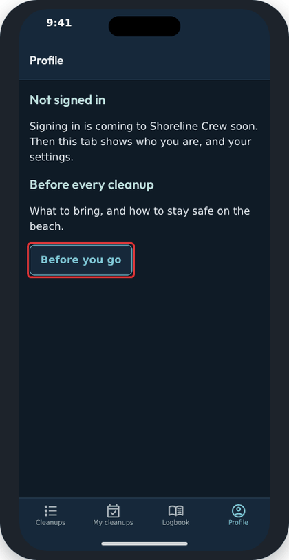
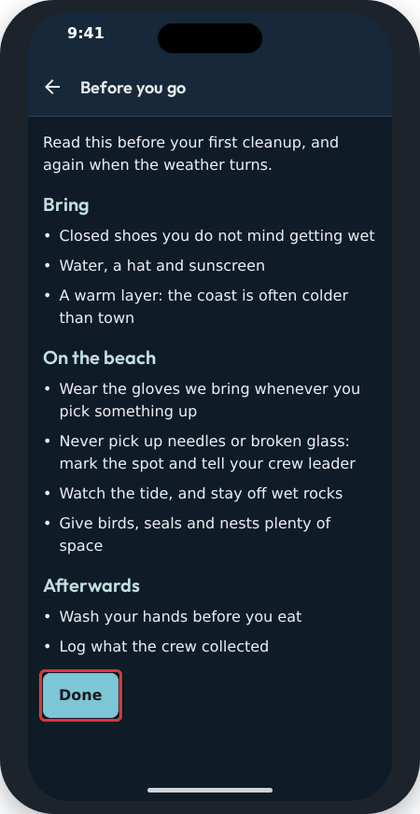
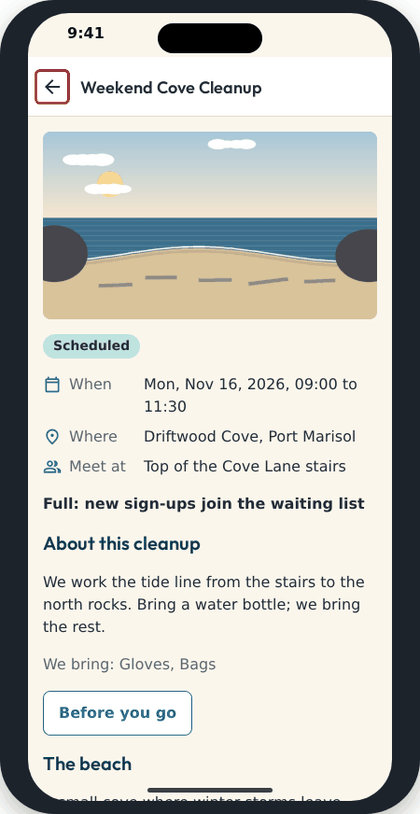

🗂️ Lesson 4.2: Tabs, Nesting and Modals
Open almost any app on your phone and look at the bottom of the screen: a row of tabs, the handful of places you go back to all day. Above them, screens slide in from the side, and now and then one slides up from the bottom, asks for a moment of your attention, and goes away again. Today Shoreline Crew gets all three. You will see that each is a navigator, that navigators sit inside each other like boxes, and that where you put a screen decides what is around it: a tab bar, a back arrow, or neither.
🎯 Learning Objectives
By the end of this lesson, you will be able to:
- Build a tab bar with Expo Router's JavaScript
Tabs, with an icon, a title and themed colors for each tab, and explain how it differs from the template'sNativeTabs - Use a group folder,
(tabs), to nest the tab navigator inside the root stack without changing any address - Decide where a screen belongs: on top of the tabs (no tab bar), inside a tab (tab bar stays), or as a modal, and say which edges of the phone each one touches
- Present a screen as a modal, close it with a button that works however it was opened, and describe how iPhones, Android phones and the web preview show it
- Read the warnings and odd headers that a mismatch between a layout and its files produces, and fix them
📦 Code for this lesson
Starting code: lesson-12-start.zip · Finished code: lesson-12-end.zip. Each folder has a README with the commands to run it.
In This Lesson
👋 Welcome: Four Places to Come Back To
In Lesson 4.1, Shoreline Crew became a stack: the Cleanups list at the bottom, a cleanup's own screen pushed on top. That works for "look something up and come back". It does not work for the other things a volunteer does with the app: checking which cleanups they signed up for, recording what the crew collected, seeing who they are signed in as. Those are not "on top of" the list; they are places of their own. By the end of today:
- A tab bar along the bottom: Cleanups, My cleanups, Logbook and Profile, each with an icon from the
Iconcomponent you built in Lesson 2.3. - Placeholder tabs that say what is coming. My cleanups, the Logbook and Profile need data the app cannot get yet: signing in (Lesson 4.3), sign-ups (Lesson 5.2), the logbook kept on the phone (Lessons 5.3 and 5.5). Each tab says so honestly instead of pretending.
- Cleanups that open on top of the tabs, with a back button that says "Back" instead of a folder name you will meet in Common Mistakes.
- A modal: Before you go, the crew's safety briefing (what to bring, what never to pick up, watching the tide), sliding up over whatever screen opened it, with a Done button.
Why it matters for your work: almost every app you will be asked to build has this shape, tabs at the top level, stacks for drilling in, modals for short tasks. "Where should this screen go?" is a question you will answer in design reviews, and the answer changes what users see: whether the tab bar stays, what the back button says, how a screen closes. Getting the nesting right early saves rewiring later, when deep links (Lesson 4.4) and sign-in (Lesson 4.3) depend on it.
Why it matters for the volunteers: on a windy beach with gloves on, nobody wants to hunt through menus. One thumb tap reaches any of the four places, and the safety briefing is two taps away from any cleanup.
If you did the React + TypeScript course: the web version of this is nested routes with a shared layout and an <Outlet /> (React Router, Lessons 6.1 and 6.2 of that course). The idea carries over. What changes on a phone is that each layer is a navigator with its own behavior: tabs keep every visited screen alive, stacks pile screens up, and a modal is a stack screen presented a different way.
📑 Tabs
A tab navigator shows one screen at a time and a bar of buttons to switch between them. It behaves differently from the stack you know:
| Stack (Lesson 4.1) | Tabs (today) | |
|---|---|---|
| Opening a screen | Pushes it on top of the pile | Switches to it; the others stay where they are |
| Screens you left | Stay mounted underneath | Stay mounted once visited, with their state (scroll position, search text, loaded pages) |
| A screen you never opened | Does not exist yet | Is not drawn until its first visit ("lazy") |
| Back | Pops the top screen | Goes to the first tab, Cleanups (the default; on Android, the system back gesture or button) |
The course measured those last rows in the web preview: type "calder" in the Cleanups search, switch to Profile and back, and the search still says "calder" with its three cleanups. Load /logbook directly and the Cleanups screen is not drawn at all until you tap its tab. And the browser's back button after a few tab switches went to Cleanups, not through every tab you visited.
Two tab bars to choose from
Expo Router 58 offers two. The template you started from in Lesson 1.2 used the second one before you reset it:
JavaScript tabs: expo-router/js-tabs | Native tabs: expo-router/native-tabs | |
|---|---|---|
| Who draws the bar | React Native views (React Navigation's bottom tabs) | The phone itself: iOS's tab bar, Android's bottom navigation |
| Looks | The same on every phone, styled with your theme | Exactly like the system's own apps, including newer system styles |
| Headers | Each tab can have a header bar, like a stack screen | No headers of its own: a tab that needs one puts a stack inside |
| Web preview | Works like on a phone (measured) | The course measured a small floating switcher at the top of the page, with no icons, and a "tree hydrated but some attributes … didn't match" error in the dev server: the template ships a separate web version (app-tabs.web.tsx) for that reason |
| Icons | Any React element: Shoreline Crew's Icon | NativeTabs.Trigger.Icon with an SF Symbol (sf) and a Material name (md) |
Shoreline Crew uses the JavaScript tabs: one bar that you can see and check in the web preview, themed for dark mode by the ThemeProvider you already have, with headers per tab and the icon component you already wrote. For comparison, here is what the template's style looks like (it type-checks in the Shoreline Crew project; you will not use it):
import { NativeTabs } from 'expo-router/native-tabs';
// The template's tab bar: the phone's own tab bar, drawn by iOS and Android
export default function TabLayout() {
return (
<NativeTabs>
<NativeTabs.Trigger name="index">
<NativeTabs.Trigger.Label>Cleanups</NativeTabs.Trigger.Label>
<NativeTabs.Trigger.Icon sf="list.bullet" md="format_list_bulleted" />
</NativeTabs.Trigger>
<NativeTabs.Trigger name="profile">
<NativeTabs.Trigger.Label>Profile</NativeTabs.Trigger.Label>
<NativeTabs.Trigger.Icon sf="person.crop.circle" md="account_circle" />
</NativeTabs.Trigger>
</NativeTabs>
);
}The native look is a real advantage, and you may prefer it in an app of your own once you have a phone or emulator to check it on. The navigation ideas in this lesson are the same for both.
🧩 Version note: Tabs from 'expo-router' is deprecated
Many articles and older projects write import { Tabs } from 'expo-router'. In Expo Router 58 that export still works, but its type definition is marked @deprecated with the message "Use import { Tabs } from 'expo-router/js-tabs' instead." The course measured that neither tsc nor expo lint mentions it: only your editor does, by striking the name through. Import from expo-router/js-tabs.
💡 Mental model: the tables in the crew tent
At a big cleanup, the crew tent has four tables: sign-in, gear, the logbook, first aid. You walk between them; each one keeps its own papers spread out exactly as you left them, and nobody stacks the gear table on top of the sign-in table. That is a tab navigator. A stack is what happens at one table: the crew leader puts one clipboard on top of another. And a modal is the safety card someone hands you to read before you head down to the water: you hold it up in front of everything, then hand it back.
🪆 Navigators Inside Navigators
A layout file holds a navigator, and a navigator's screens can themselves be layouts with navigators inside. Shoreline Crew's tree after today:
The root Stack (in src/app/_layout.tsx) has four screens: the whole tab navigator counts as one of them, next to the cleanup screen, the modal, and the not-found screen (left out of the picture). That has consequences you can see:
- A cleanup opens on top of the tabs. It is pushed onto the root stack, above the screen that holds the tab bar, so the tab bar is hidden while you read about the cleanup, and back returns you to the tab you came from, as you left it.
- The folder
(tabs)adds nothing to the address. Parentheses make a group:src/app/(tabs)/index.tsxis still/, and(tabs)/profile.tsxis/profile. The group exists only so the four files can share a layout. (Typed routes accept/profileand/(tabs)/profile; the course writes the short form.) - Each navigator draws its own headers. The root stack would draw a header above the tab navigator too, titled with its route name, so the root layout hides it:
<Stack.Screen name="(tabs)" options={{ headerShown: false }} />. Inside, the tab navigator draws a header for each tab, except Cleanups, which has its banner.
On top of the tabs, or inside a tab?
The other way to nest is to put a stack inside a tab: a folder (tabs)/logbook/ with its own _layout.tsx holding a Stack. Screens pushed there stay above the tab bar. Both are right for different screens:
| Put the screen… | The tab bar | Good for | Shoreline Crew |
|---|---|---|---|
In the root stack, next to (tabs) | Hidden while it is open | A screen reached from several tabs, or from a link from outside (one address, one place); reading or doing one thing | A cleanup: opened from Cleanups today, from My cleanups later, from a shared link in Lesson 4.4 |
| In a stack inside one tab | Stays; switching tabs and back keeps that tab's pile | Drilling deeper within one area of the app, while the other tabs stay one tap away | Exercise 4: a "How the logbook works" page inside the Logbook tab |
Edges, one more time
The rule from Lesson 2.3 now has every case: a screen leaves out each edge that a bar already covers.
| Screen | Top | Bottom | edges |
|---|---|---|---|
| Cleanups (no header, above the tab bar) | Its own: the status bar | The tab bar | ['top', 'left', 'right'] |
| My cleanups, Logbook, Profile | The tab's header | The tab bar | ['left', 'right'] |
| A cleanup, the modal, not found | The stack's header | Its own: the home indicator | ['bottom', 'left', 'right'] |
The JavaScript tab bar keeps itself clear of the home indicator (it adds the bottom inset to its own height), and so does each header for the status bar, which is exactly why the screen must not add them again.
🪟 Modals
A modal is a screen for a short task or a quick read, presented over everything else and dismissed when you are done. In Expo Router it is an ordinary route in a stack, with one option: presentation: 'modal'. It has an address like any screen (/before-you-go), and it is pushed and popped like any screen; only the way it appears changes. According to the React Navigation and Expo Router documentation, and what the course measured in the web preview:
| iPhone | Android phone | Web preview | |
|---|---|---|---|
| How it appears | Slides up as a card; the screen behind shrinks back slightly | Slides or fades in over the whole screen | An ordinary screen with a back arrow (measured) |
| How it closes | Swipe the card down, or your own button | The system back gesture or button, or your own button | The back arrow, the browser's back button, or your own button |
Because the ways to close differ, and because swiping a card down is not obvious to everyone, a modal should always have a visible way out: Shoreline Crew's has a Done button. And like the cleanup screen in Lesson 4.1, a modal can be opened from its address with nothing underneath (a link, or the web preview's address bar), so Done uses the same pattern: router.back() when there is something to go back to, router.replace('/') when there is not.
Sheets
A stack screen can also be presented as a sheet that covers only part of the screen and snaps to set heights (detents), the way many map and music apps show details:
import { Stack } from 'expo-router';
// Inside the root Stack: a sheet that stops at half the screen, and can be pulled up to full height
export function SheetScreen() {
return (
<Stack.Screen
name="before-you-go"
options={{
presentation: 'formSheet',
sheetAllowedDetents: [0.5, 1],
sheetGrabberVisible: true,
title: 'Before you go',
}}
/>
);
}It type-checks, and the course measured that the web preview shows it as an ordinary screen, the same as a modal. The half-height sheet, the grabber and the pull-up are phone features, described in the docs (try it in Expo Go once your phone has data in Lesson 5.1). Shoreline Crew's briefing is a long read, so it stays a full modal.
A modal route or React Native's Modal component?
React Native also has a <Modal> component, which shows content over the current screen from inside it. Use it for something small that belongs to one screen and does not need an address (a "Cancel your sign-up?" question, for instance). Use a modal route when the content is a screen of its own: it has an address, so another screen, a link or a test can open it, and back and Done work the way they work everywhere else.
💡 Why a modal and not a tab or a pushed screen?
A modal says "this is a short detour, and you will be right back where you were". The safety briefing is read before a cleanup, from the cleanup's screen or from Profile, and then closed: a modal. Things volunteers return to all the time are tabs; things they drill into are pushed screens. In Lessons 4.3 and 5.4 the same reasoning makes sign-in and the new debris log modals too.
⚠️ Common Mistakes
Navigation mistakes rarely stop the app: it still runs, it just shows something odd. So the clues are a yellow warning in Metro's terminal, a strange word in a header, or a tab that is not there. Each one below was produced on purpose in the finished project and is quoted the way Metro printed it. Reading these is how you find which layout and which file disagree.
⚠️ A header that says "(tabs)"
Move the Cleanups screen into (tabs) but leave the root layout's old line, <Stack.Screen name="index" … />, as it was. Open the web preview and look at Metro's terminal:
Expected output
...
λ WARN [Layout children]: No route named "index" exists in nested children: [ '+not-found', 'before-you-go', '(tabs)', 'cleanups/[id]' ]
...
Web WARN [Layout children]: No route named "index" exists in nested children: ["+not-found", "before-you-go", "(tabs)", "cleanups/[id]"]
...The root stack has no screen called index any more: its children are the four listed, and one of them is (tabs). The λ line comes from the server rendering the page for the web preview, the Web line from the browser; with a phone connected you should see an iOS or Android line too. Worse, nothing hides the root stack's header above the tabs: the course measured a header titled (tabs), the group's route name, at the top of every tab, and on Profile a second header under it. The fix is the line from Step 2: <Stack.Screen name="(tabs)" options={{ headerShown: false }} />.
⚠️ A back button that says "(tabs)"
A stack's back button is labeled with the title of the screen underneath. Under the cleanup screen is the tab navigator, whose title nobody set, so the label falls back to its route name. The course measured it in the web preview, where the arrow has no visible words but a screen reader hears its aria-label: "(tabs), back". The React Navigation source uses the same label on an iPhone, where it is printed next to the chevron. The fix, headerBackTitle: 'Back' in the root stack's screenOptions (Step 5), makes it "Back" on an iPhone and "Go back" for screen readers in the web preview.
⚠️ A tab that disappears
Write name="my-cleanup" (one letter short) in (tabs)/_layout.tsx:
Expected output
...
λ WARN [Layout children]: No route named "my-cleanup" exists in nested children: [ 'index', 'logbook', 'my-cleanups', 'profile' ]
...
Web WARN [Layout children]: No route named "my-cleanup" exists in nested children: ["index", "logbook", "my-cleanups", "profile"]
...The course measured more than a warning: the web preview's tab bar had only three tabs, and My cleanups was gone. The name in a Tabs.Screen must be the file's name, without .tsx; the warning even lists the names that exist. tsc says nothing here, because screen names are plain strings, not typed routes: Metro's terminal is where this shows up.
⚠️ Copied instead of moved
If src/app/index.tsx is still there next to the new src/app/(tabs)/index.tsx, both claim the address /. The course measured what the web preview does: the root file wins, so the Cleanups screen opens with no tab bar at all and a header titled index, and Metro prints no warning about it. If the tab bar is missing on the first screen, look for a leftover index.tsx. Moving with git mv (Step 2) avoids it, and Git records it as a move.
⚠️ The bottom inset twice
A screen above the tab bar that keeps the 'bottom' edge adds the home indicator's height (about 34 points on a notched iPhone) inside its content, right above a tab bar that already made room for it: an empty strip at the end of every list. The web preview has no insets, so you will not see it there; it is the edges table in Navigators Inside Navigators, applied: above a tab bar, leave out 'bottom'.
🛠️ Project: Four Tabs and a Safety Briefing
You add the tab icons, move the Cleanups screen into a (tabs) group with a tab layout, build the Before you go modal, fill the three new tabs with honest placeholders, and fix the back button for screens that open on top of the tabs. Keep shoreline-api running in its own terminal (node server.ts) and Metro in another (npx expo start, then w): Metro keeps the route types fresh as you add files, and its terminal shows the warnings from Common Mistakes. Work in the shoreline-crew folder.
Step 1: Icons for the tab bar (5 min)
Every icon in the app goes through src/components/Icon.tsx (Lesson 2.3), named by its job, with an SF Symbol for iOS and a Material Symbol for Android and the web. Add four, one per tab:
clear: { ios: 'xmark.circle.fill', android: 'cancel', web: 'cancel' },
+ // The tab bar
+ cleanups: { ios: 'list.bullet', android: 'format_list_bulleted', web: 'format_list_bulleted' },
+ myCleanups: { ios: 'calendar.badge.checkmark', android: 'event_available', web: 'event_available' },
+ logbook: { ios: 'book.closed', android: 'menu_book', web: 'menu_book' },
+ profile: { ios: 'person.crop.circle', android: 'account_circle', web: 'account_circle' },
} satisfies Record<string, SymbolViewProps['name']>;The satisfies line from Lesson 2.3 checks every name: a misspelled symbol is a tsc error, not a blank tab. Icon already takes a color and a size, which is exactly what a tab bar hands to its icons. The icons stay hidden from screen readers: each tab's title is read instead.
Step 2: The (tabs) group and its tab bar (20 min)
Make the folder and move the Cleanups screen into it. git mv is the same command in PowerShell, macOS and Linux; the quotes keep the shell from reading the parentheses:
mkdir "src/app/(tabs)"
git mv src/app/index.tsx "src/app/(tabs)/index.tsx"The Cleanups screen now sits above a tab bar, which covers the bottom of the screen. In src/app/(tabs)/index.tsx, pass the edges it still touches to useScreenScroll (every other line of the file stays as it is: its imports start with @/, so moving the file breaks none of them):
// The frame (page color, safe areas) goes on a View around the list; FlashList takes the rest.
// The tab bar covers the bottom of the screen, so the list leaves out the 'bottom' edge.
const { style: frame, ...scroll } = useScreenScroll(['top', 'left', 'right']);Now the layout for the group. Create src/app/(tabs)/_layout.tsx:
import { Tabs } from 'expo-router/js-tabs';
import { Icon } from '@/components/Icon';
import { useTheme } from '@/hooks/useTheme';
import { fonts } from '@/theme/typography';
// The tab bar: the four places a volunteer goes back to all the time.
// The (tabs) folder adds nothing to the address: this tab's Cleanups screen is still "/".
export default function TabLayout() {
const { colors } = useTheme();
return (
<Tabs
screenOptions={{
headerTitleStyle: { fontFamily: fonts.heading },
tabBarActiveTintColor: colors.action, // the tab you are on
tabBarInactiveTintColor: colors.textMuted, // the others, still easy to read
}}
>
<Tabs.Screen
name="index"
options={{
title: 'Cleanups',
headerShown: false, // the Cleanups screen draws its own banner
tabBarIcon: ({ color, size }) => <Icon name="cleanups" color={color} size={size} />,
}}
/>
<Tabs.Screen
name="my-cleanups"
options={{
title: 'My cleanups',
tabBarIcon: ({ color, size }) => <Icon name="myCleanups" color={color} size={size} />,
}}
/>
<Tabs.Screen
name="logbook"
options={{
title: 'Logbook',
tabBarIcon: ({ color, size }) => <Icon name="logbook" color={color} size={size} />,
}}
/>
<Tabs.Screen
name="profile"
options={{
title: 'Profile',
tabBarIcon: ({ color, size }) => <Icon name="profile" color={color} size={size} />,
}}
/>
</Tabs>
);
}Tabsfromexpo-router/js-tabs(not fromexpo-router: the version note). It works likeStack:screenOptionsfor every tab, aTabs.Screenper file in this folder, in the order the tabs appear.titleis used twice: as the tab's label and as the header's title. Cleanups hides its header, as it did in the stack.tabBarIconis a function: the tab bar calls it with the color for the tab's state (selected or not) and a size, and draws what it returns.- Colors. The bar's background and border come from the navigation theme your root layout gives
ThemeProvider(Lesson 2.5), so it follows dark mode. The selected tab would be the theme'sprimarycolor anyway; namingcolors.actionkeeps it obvious, andcolors.textMutedfor the others gives readable labels in both themes (the course's axe checks pass in light and dark).
Last, the root layout. The stack's first screen is no longer index but the whole group, and its header must stay hidden (the first Common Mistake shows what happens otherwise):
- {/* ...and these to one. The Cleanups screen draws its own banner, so it hides the header bar;
- its title still names it (an iPhone's back button says "Cleanups") */}
- <Stack.Screen name="index" options={{ title: 'Cleanups', headerShown: false }} />
+ {/* ...and these to one. The tabs are ONE screen of this stack, with their own headers */}
+ <Stack.Screen name="(tabs)" options={{ headerShown: false }} />
{/* Until the cleanup has loaded and its screen sets its own title */}Everything else in the root layout stays: the fonts and splash hold, the navigation theme, ThemeProvider and the status bar. Reload the web preview: the Cleanups screen, with a tab bar under it. Its address is still /. The tab layout names three files you have not created yet, so for now the bar has one tab, and Metro prints a warning for each missing one:
Expected output
...
λ WARN [Layout children]: Too many screens defined. Route "my-cleanups" is extraneous.
λ WARN [Layout children]: Too many screens defined. Route "logbook" is extraneous.
λ WARN [Layout children]: Too many screens defined. Route "profile" is extraneous.
...
Web WARN [Layout children]: Too many screens defined. Route "my-cleanups" is extraneous.
Web WARN [Layout children]: Too many screens defined. Route "logbook" is extraneous.
Web WARN [Layout children]: Too many screens defined. Route "profile" is extraneous.
...It is the warning Lesson 4.1 showed when its layout named files that did not exist yet. This time you expect it: Step 4 creates the three files and it goes away.
Step 3: The Before you go modal (20 min)
A modal is a route of the root stack, so its file goes in src/app itself, not in the group. Create src/app/before-you-go.tsx:
import { router } from 'expo-router';
import { StyleSheet, View } from 'react-native';
import { AppText } from '@/components/AppText';
import { Button } from '@/components/Button';
import { Screen } from '@/components/Screen';
import { spacing } from '@/theme/spacing';
type Tips = { heading: string; tips: string[] };
// The crew's safety briefing, in three parts
const briefing: Tips[] = [
{
heading: 'Bring',
tips: [
'Closed shoes you do not mind getting wet',
'Water, a hat and sunscreen',
'A warm layer: the coast is often colder than town',
],
},
{
heading: 'On the beach',
tips: [
'Wear the gloves we bring whenever you pick something up',
'Never pick up needles or broken glass: mark the spot and tell your crew leader',
'Watch the tide, and stay off wet rocks',
'Give birds, seals and nests plenty of space',
],
},
{
heading: 'Afterwards',
tips: ['Wash your hands before you eat', 'Log what the crew collected'],
},
];
// A modal screen: it slides up over whatever was showing, and Done puts it away again
export default function BeforeYouGoScreen() {
// Opened from inside the app, the screen underneath is still there; opened from its
// address, nothing is underneath, so the Cleanups screen takes its place
function done() {
if (router.canGoBack()) {
router.back();
} else {
router.replace('/');
}
}
return (
// The modal has its own header bar at the top
<Screen scroll edges={['bottom', 'left', 'right']}>
<AppText>Read this before your first cleanup, and again when the weather turns.</AppText>
{briefing.map(({ heading, tips }) => (
<View key={heading} style={styles.part}>
<AppText variant="heading" accessibilityRole="header">
{heading}
</AppText>
{tips.map((tip) => (
<View key={tip} style={styles.tip}>
<AppText aria-hidden>•</AppText>
<AppText style={styles.text}>{tip}</AppText>
</View>
))}
</View>
))}
<Button label="Done" variant="primary" onPress={done} />
</Screen>
);
}
const styles = StyleSheet.create({
part: {
gap: spacing.sm,
},
tip: {
flexDirection: 'row',
gap: spacing.sm,
},
text: {
flex: 1, // the tip wraps beside its bullet
},
});- The briefing is data, typed, and drawn with
map: three headings, each with its tips. Adding a tip is one line, and no layout code changes. - The bullet is hidden from screen readers (
aria-hidden): they read each tip as its own line, with no "bullet" before it. done()is Lesson 4.1'sleave()pattern: back to whatever opened the modal, or, opened from its address with nothing underneath, the Cleanups screen in its place.- Edges: the modal has a header bar (the stack draws one for it), so it leaves out
'top'; nothing covers its bottom.
Then tell the root stack to present it as a modal, under the not-found screen:
<Stack.Screen name="+not-found" options={{ title: 'Not found' }} />
+ {/* A modal: it slides up over the tabs or a cleanup, instead of being pushed from the side */}
+ <Stack.Screen
+ name="before-you-go"
+ options={{ presentation: 'modal', title: 'Before you go' }}
+ />
</Stack>Try it at http://localhost:8081/before-you-go. Opened from its address, there is nothing underneath: no back arrow, and Done takes you to the Cleanups tab. In the next step, Profile opens it the way volunteers will.
Step 4: Three honest tabs (15 min)
My cleanups, the Logbook and Profile all need things the app does not have yet. Rather than fake data, each one says plainly what it will hold. Each sits under its tab's header and above the tab bar, so it touches only the left and right edges. Create the three files in src/app/(tabs):
import { Link } from 'expo-router';
import { AppText } from '@/components/AppText';
import { Button } from '@/components/Button';
import { Screen } from '@/components/Screen';
// My cleanups: the cleanups you signed up for. Empty until volunteers can sign in and sign up.
export default function MyCleanupsScreen() {
return (
// The header bar covers the top and the tab bar the bottom: only the sides are left
<Screen scroll edges={['left', 'right']}>
<AppText variant="heading" accessibilityRole="header">
No sign-ups yet
</AppText>
<AppText>
When you sign up for a cleanup, it is listed here, with your place on the waiting list if
it is full. Signing in and signing up are coming to Shoreline Crew soon.
</AppText>
{/* "/" is the Cleanups tab: a link to a tab's address switches to that tab */}
<Link href="/" asChild>
<Button label="Find a cleanup" variant="primary" />
</Link>
</Screen>
);
}import { AppText } from '@/components/AppText';
import { Screen } from '@/components/Screen';
// The logbook: debris logs recorded at cleanups, kept on the phone until they are sent
export default function LogbookScreen() {
return (
<Screen scroll edges={['left', 'right']}>
<AppText variant="heading" accessibilityRole="header">
Your logbook is empty
</AppText>
<AppText>
At a cleanup, you will record what the crew collected here: counts, bags and weight. The
logbook keeps every record on your phone, even with no signal, and sends it when you are
back online.
</AppText>
</Screen>
);
}import { Link } from 'expo-router';
import { AppText } from '@/components/AppText';
import { Button } from '@/components/Button';
import { Screen } from '@/components/Screen';
// Profile: who you are and your settings. Until volunteers can sign in, the beach safety guide.
export default function ProfileScreen() {
return (
<Screen scroll edges={['left', 'right']}>
<AppText variant="heading" accessibilityRole="header">
Not signed in
</AppText>
<AppText>
Signing in is coming to Shoreline Crew soon. Then this tab shows who you are, and your
settings.
</AppText>
<AppText variant="heading" accessibilityRole="header">
Before every cleanup
</AppText>
<AppText>What to bring, and how to stay safe on the beach.</AppText>
{/* A modal: it slides up over the tabs, and closes back to this tab */}
<Link href="/before-you-go" asChild>
<Button label="Before you go" />
</Link>
</Screen>
);
}Which lesson fills each one:
| Tab | Today | Filled in |
|---|---|---|
| My cleanups | "No sign-ups yet" and a link back to the list | Lesson 4.3 (signing in), Lesson 5.2 (your sign-ups from the API, cancelling) |
| Logbook | What the logbook will do | Lesson 5.3 (stored on the phone), Lesson 5.5 (queued offline, sent when back online) |
| Profile | "Not signed in", and the Before you go button | Lesson 4.3 (who you are, sign out), Lesson 5.3 (theme choice), Lesson 6.4 (reminders) |
Two links to notice. Find a cleanup links to /, the Cleanups tab's address: a link to a tab switches to that tab. Before you go on Profile links to the modal. Reload: four tabs, the warnings gone. Open Profile and press Before you go: the modal covers the tab bar; Done brings you back to Profile.

(tabs)/_layout.tsx: four tabs, each an icon from Icon.tsx above its title. The selected tab is in the action color. This is the JavaScript tab bar, so a phone shows the same bar. (The frame gives it the bottom inset a notched iPhone would; the web preview has none.)

Step 5: Cleanups on top of the tabs (10 min)
Press Open on Weekend Cove. The cleanup screen still opens: it is a route of the root stack, so it is pushed on top of the whole tab navigator, and the tab bar is hidden until you go back. But right-click its back arrow and choose Inspect: the link is named (tabs), back (the second Common Mistake). Give every back button in the root stack plain words:
- <Stack screenOptions={{ headerTitleStyle: { fontFamily: fonts.heading } }}>
+ <Stack
+ screenOptions={{
+ headerTitleStyle: { fontFamily: fonts.heading },
+ // The back button's words. Left alone, it shows the previous screen's title, and under
+ // the tabs that is the folder's name, "(tabs)"
+ headerBackTitle: 'Back',
+ }}
+ >Then give the cleanup screen a way to the briefing, under "We bring". In src/app/cleanups/[id].tsx, import Link and Button and add the link:
-import { router, Stack, useLocalSearchParams } from 'expo-router';
+import { Link, router, Stack, useLocalSearchParams } from 'expo-router';
// ...
import { Badge } from '@/components/Badge';
+import { Button } from '@/components/Button';
// ...
<AppText variant="muted">We bring: {event.suppliesProvided.join(', ')}</AppText>
)}
+ {/* The safety briefing opens as a modal over this screen */}
+ <Link href="/before-you-go" asChild>
+ <Button label="Before you go" />
+ </Link>
headerBackTitle.Press Before you go on the cleanup screen and then Done: you are back on Weekend Cove, and its back arrow returns you to the Cleanups tab. That is three navigators at work: the modal and the cleanup in the root stack, the list in the tab navigator underneath.
Step 6: Check, walk every path, commit (5 min)
npx tsc --noEmitnpx expo lintExpected output
env: load .env.local
env: export EXPO_PUBLIC_API_URLtsc prints nothing; expo lint only the two env: lines. Metro's terminal should have no yellow warnings left. Then walk the paths: type "calder" in the search, switch to Profile and back (the search is still there); My cleanups → Find a cleanup; Profile → Before you go → Done; a cleanup → Before you go → Done → back; /before-you-go typed in → Done. Commit.
📱 On your phone
Expo Go still cannot reach the API (Lesson 5.1), but the tabs, the placeholders and the modal need no data: open Profile and Before you go. The documentation describes what to look for: on an iPhone, the modal slides up as a card with the screen behind it pushed back, and swiping the card down closes it like Done; on an Android phone, it covers the screen and the system back gesture closes it. The tab bar should sit above the home indicator or gesture bar on its own, with no gap between the list and the bar.
🧭 For your own app
For your final project, list the three to five places your users return to all the time: those are your tabs. For each other screen, decide: does it open on top of the tabs (reached from several places, or from a link), inside one tab's stack (drilling into one area), or as a modal (a short task with a clear end)? Write each screen's file path and its edges.
✅ Project Completion Checklist
- ☐
Icon.tsxhas the four tab icons, and the tab bar shows Cleanups, My cleanups, Logbook and Profile, each with its icon - ☐ The Cleanups screen lives in
src/app/(tabs)/index.tsx, its address is still/, and it leaves out the'bottom'edge - ☐ The root layout hides the
(tabs)header, keeps fonts, splash, status bar and theme, and labels back buttons "Back" - ☐ My cleanups, Logbook and Profile say what they will hold, with
edges={['left', 'right']} - ☐ Before you go opens as a modal from Profile and from a cleanup, and Done closes it, even when it was opened from its address
- ☐
npx tsc --noEmitprints nothing,npx expo lintonly theenv:lines, Metro shows no warnings, and the work is committed
🏋️ Hands-on Exercises
Optional, but recommended: each one takes five to fifteen minutes. Undo the code changes afterwards; the course's next lesson starts from the project as Step 6 left it.
🏋️ Exercise 1: A shorter tab label
On a small phone, "My cleanups" is the longest label in the bar. Make the tab say Mine while the header above the screen still says My cleanups.
💡 Hint
title feeds both the label and the header. The tab bar has an option of its own for the label, and it wins over the title.
✅ Solution
Add tabBarLabel: 'Mine', after title: 'My cleanups', in that Tabs.Screen's options. The course measured it in the web preview: the tab reads "Mine", the header "My cleanups", and tsc and ESLint are clean. Screen readers read the tab's label, so "Mine" is what they hear too; if that is too vague, tabBarAccessibilityLabel can say "My cleanups" to them while the bar shows the short word.
🏋️ Exercise 2: Close from the header
Long briefings scroll, and Done is at the end. Add a Close button to the right side of the modal's header bar that does the same as Done.
💡 Hint
Lesson 4.1 set a screen's title from inside the screen with <Stack.Screen options={…} />. Header options include headerRight, a function that returns an element.
✅ Solution
Import Stack next to router, and put <Stack.Screen options={{ headerRight: () => <Button label="Close" onPress={done} /> }} /> as the first child of the Screen. Inside the component it can use done, which the layout could not. Measured in the web preview: Profile → Before you go → Close returns to Profile; it type-checks and lints clean. On an iPhone, a header button on the right is where people look for Close or Done in a modal.
🏋️ Exercise 3: Which edges?
Without running anything, write the edges for each screen: (a) a Settings screen pushed inside the Profile tab's own stack, with a header; (b) a full-screen photo viewer presented as a modal with headerShown: false; (c) a Map tab with no header that draws the map to every edge but keeps its buttons clear of the notch.
💡 Hint
For each edge ask: does a header bar or the tab bar already cover it? If yes, leave it out.
✅ Solution
(a) ['left', 'right']: a header above, and inside a tab the tab bar stays below. (b) All four, the default: no header, no tab bar (a modal covers it). (c) The map itself ignores insets on purpose (it is a background), and the buttons laid over it use ['top', 'left', 'right']: the status bar and notch are above, the tab bar below.
🏋️ Exercise 4: A stack inside the Logbook tab (Stretch)
Give the Logbook tab a "How the logbook works" page that opens inside the tab, so the tab bar stays visible. Turn (tabs)/logbook.tsx into a folder with its own stack.
💡 Hint
Move logbook.tsx to (tabs)/logbook/index.tsx (the address stays /logbook) and add (tabs)/logbook/_layout.tsx with a Stack, plus (tabs)/logbook/how-it-works.tsx. Then count the header bars.
✅ Solution
The layout:
import { Stack } from 'expo-router';
import { fonts } from '@/theme/typography';
// A stack inside the Logbook tab: its screens open on top of each other, and the tab bar stays
export default function LogbookLayout() {
return (
<Stack screenOptions={{ headerTitleStyle: { fontFamily: fonts.heading }, headerBackTitle: 'Back' }}>
<Stack.Screen name="index" options={{ title: 'Logbook' }} />
<Stack.Screen name="how-it-works" options={{ title: 'How the logbook works' }} />
</Stack>
);
}The new page, with a header above and the tab bar below:
import { AppText } from '@/components/AppText';
import { Screen } from '@/components/Screen';
// Pushed inside the Logbook tab: a header above, the tab bar below
export default function HowItWorksScreen() {
return (
<Screen scroll edges={['left', 'right']}>
<AppText>
Every debris log is saved on your phone first. When there is signal, the app sends it to the
crew, and it stays in your logbook.
</AppText>
</Screen>
);
}In logbook/index.tsx, add a <Link href="/logbook/how-it-works" asChild><Button label="How the logbook works" /></Link> (import Link and Button). The course measured the result in the web preview: the page opens at /logbook/how-it-works, the tab bar stays, and the back arrow returns to the logbook. But there are two header bars, "Logbook" from the tab navigator above "How the logbook works" from the new stack. In (tabs)/_layout.tsx, add headerShown: false to the Logbook tab's options, so the stack draws the only header. With that, it type-checks and lints clean.
🎯 Quick Quiz
🎯 Check Your Understanding
Question 1: Which file draws the My cleanups tab, and what is its address?
Question 2: A volunteer presses Open on a cleanup and the tab bar disappears. Why?
Question 3: The Logbook screen has the tab's header bar above it and the tab bar below it. Which edges should its Screen keep clear?
Question 4: On the cleanup screen, a screen reader announces the back button as "(tabs), back". What fixes it?
Question 5: Which of these belongs in a modal rather than in a tab or a pushed screen?
❓ Common Questions at This Stage
How many tabs should an app have?
Apple's and Google's design guidelines both suggest three to five. Fewer, and a tab bar is not worth the space; more, and the labels get too small to read and too narrow to tap. If you have more places than that, some of them probably belong inside a tab or behind Profile. Shoreline Crew's four are the four things a volunteer does: find a cleanup, see their own, log what they collected, manage themselves.
Does switching tabs reload the data?
No. A tab you visited stays mounted with its state, so switching back shows it exactly as it was, without asking the API again. That is usually what you want, but the data can get old: someone else signs up while you were on Profile. Lesson 5.2's TanStack Query refreshes data when a screen comes back into view; Expo Router also exports useFocusEffect for running code each time a screen gets focus.
Can I hide the tab bar on one screen inside a tab?
There are options for it (tabBarStyle with display: 'none'), but the documentation recommends the structure you built today instead: a screen that should not show the tab bar belongs in the root stack, on top of the tabs, like the cleanup screen. Hiding the bar from inside a tab makes it jump in and out as screens change.
Why does the modal have a header with a back arrow in the web preview?
Because on the web, the stack draws a modal like any other screen (the course measured that, and a sheet the same way). Phones present it differently (the table in Modals), and the documentation describes the closing gestures, not an arrow, as the usual way out there. That difference is one reason the modal has its own Done button: it works the same everywhere.
Should every tab have its own stack?
Only tabs that drill down. Many apps give each tab a stack so that, for example, a cleanup opened from My cleanups keeps the tab bar. Shoreline Crew keeps its cleanup screen in the root stack instead, so one address (/cleanups/e08) always opens the same screen, which matters for links from outside the app (Lesson 4.4). Exercise 4 shows the other way, for a page that only makes sense inside its tab.
🌟 Going Further: Bonus Challenge
Read the Expo Router documentation on modals and try presenting Before you go as a formSheet with sheetAllowedDetents: [0.5, 1] (the snippet in Modals) in Expo Go on your phone. What does the half-height sheet show first, and how do you reach the rest? Would a volunteer standing on a beach prefer the sheet or the full modal for a safety briefing, and why? (The web preview will not show the difference: you need the phone.)
📓 Learning Journal
Take five to ten minutes and add today's entry to your journal:
- Key concepts you learned today
- Techniques that clicked (and the ones that have not, yet)
- Questions or confusion to look up or bring to the next session
- Ideas to try on your own
- Progress and feelings: how did this lesson go for you?
✍️ This lesson's prompt: Draw Shoreline Crew's navigator tree as boxes inside boxes: the root stack, the tab navigator inside it, and every screen. Mark where the tab bar is visible and where it is not, and write each screen's edges next to it. Then add one screen from your own app idea to the drawing: where does it go, and why there?
📝 Lesson Summary
🎓 Key Takeaways
- A tab navigator switches between screens that stay mounted once visited; back goes to the first tab. Import
Tabsfromexpo-router/js-tabs: the same bar on every phone and in the web preview;NativeTabsis the system's own bar - Navigators nest: the root stack holds the
(tabs)group as one screen. A group folder in parentheses shares a layout and adds nothing to the address - Where a screen lives decides what surrounds it: in the root stack it covers the tabs, in a stack inside a tab the bar stays, as a modal it slides up over everything
- Each navigator draws its own headers: hide the root stack's header for
(tabs), and name the back button withheaderBackTitle - Edges: leave out every edge a header or the tab bar already covers (
['left', 'right']between both) - A modal is a stack route with
presentation: 'modal': it has an address, and it needs a visible Done that works however it was opened
| If you want to… | Go to |
|---|---|
| Look up a term (tab navigator, group, nesting, modal) | Glossary |
| Read Expo Router's guides to tabs, nesting and modals | Expo Router documentation |
| See every option a tab takes | React Navigation: Bottom Tabs Navigator |
| Fix a warning you met today | Troubleshooting |
🏆 What You've Accomplished
- Shoreline Crew has the shape of a real app: four tabs, screens on top of them, and a modal
- You moved a working screen into a group without changing its address or breaking an import
- You built placeholders that tell volunteers the truth, and know which lesson fills each one
- You wrote a modal that closes correctly whether it was opened from a tab, from a cleanup, or from its address
- You read Metro's layout warnings and two odd "(tabs)" labels back to their causes
🔭 Looking Ahead
In Lesson 4.3: Sign-In Flows and Protected Routes the Profile tab's "Not signed in" becomes real. You will keep a volunteer's session in the phone's secure storage, present a sign-in screen as a modal (the same presentation: 'modal' you used today), guard routes with Stack.Protected so screens only exist for the right people, close the sign-in screen back to wherever it was opened from, and sign out.
📋 Before the Next Lesson
- Walk every path from Step 6 once more and commit
- Open
http://localhost:8081/_sitemap: four new routes, and the(tabs)group's files listed under their own addresses - Think about which Shoreline Crew screens a volunteer should only see when signed in, and which a guest can use
- Write today's journal entry, with your navigator tree
🌱 Encouragement for the Journey
Nested navigators are where many people's mental picture of an app gets blurry for a while: which header is which, why a bar vanishes, why a button says "(tabs)". If you had to stop and draw the tree today, that is not a sign you are slow; it is exactly how experienced developers work through navigation. The warnings you read today were the router telling you, in plain words, which layout and which file disagreed. Each one you trace back makes the next one quicker.